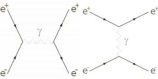
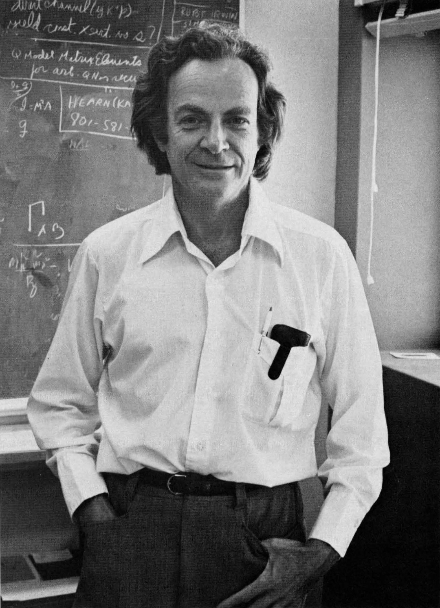
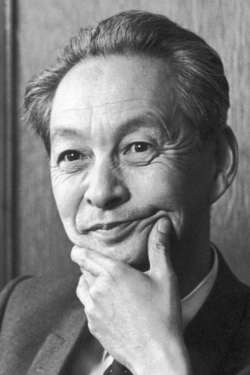

Imaginez que toutes les forces électriques autour de vous soient dues à un échange invisible de particules de lumière. C’est exactement ce que décrit la QED.
La QED fait partie du modèle standard de la physique des particules, qui tente de décrire toutes les interactions fondamentales. En QED il existe un champ électronique et un champ électromagnétique, les particules sont des excitations de ces champs. Cette théorie est l’une des théories les plus précises jamais testées, avec des prédictions vérifiées à plus de 10 décimales. La QED décrit l’interaction entre le champ électromagnétique et les particules chargées, autrement dit, celle-ci est une théorie fondamentale de la physique qui décrit comment la lumière interagit avec la matière. Les interactions ne sont pas déterministes : la QED permet de calculer des probabilités d’interaction. Elle permet d’expliquer des phénomènes à très petite échelle, au niveau des atomes et des particules.
Dans cette théorie, les interactions entre particules se font par l’échange de photons. Les photons échangés lors de ces interactions sont appelés photons virtuels. Les photons virtuels ne sont pas directement observables. Ce sont des objets mathématiques utilisés dans les calculs, qui permettent de modéliser les interactions entre particules.
Un exemple simple d’interaction en QED est la répulsion entre deux électrons. Ils échangent un photon virtuel, ce qui produit une force qui les éloigne. Ce mécanisme est à l’origine de l’électricité que nous utilisons tous les jours.

En électrodynamique quantique, les particules ne sont pas vues comme des objets solides, mais comme des excitations de champs. Les interactions électromagnétiques sont décrites comme un échange de photons virtuels, qui sont des objets mathématiques utilisés pour modéliser les forces entre particules. L’intensité de l’interaction électromagnétique est caractérisée par une constante appelée constante de structure fine (α ≈ 1/137).
Les calculs en QED reposent sur des probabilités d’interaction, et non sur des trajectoires précises comme en physique classique.
Ces interactions sont souvent représentées à l’aide de diagrammes appelés "diagrammes de Feynman" (voir schéma ci-dessus), qui montrent comment les particules échangent des photons dans le temps. Les diagrammes de Feynman ne représentent pas des trajectoires réelles, mais des outils permettant de calculer des probabilités d’interaction.

Richard Feynman (1918-1988) était un physicien américain célèbre pour son talent pédagogique et son approche originale de la physique. Il a contribué à la théorie quantique de l’électrodynamique avec ses calculs précis qui ont révolutionné la physique moderne. Il a introduit les diagrammes de Feynman qui permettent de représenter visuellement les interactions entre particules. Ses méthodes ont simplifié les calculs en QED et révolutionné la physique moderne. Il a aussi contribué à vulgariser la physique à travers ses conférences et ouvrages.
Julian Schwinger (1918-1994) était un physicien américain surtout connu pour ses méthodes mathématiques rigoureuses en électrodynamique quantique, il a développé des calculs mathématiques très précis et la méthode de renormalisation pour corriger les infinis en QED. Ses travaux ont permis de prédire des phénomènes quantiques avec une exactitude exceptionnelle, d’obtenir des résultats très précis et de vérifier expérimentalement de nombreux phénomènes quantiques.

Sin-Itiro Tomonaga (1906-1979) était un physicien japonais qui a développé la physique nucléaire et la théorie quantique des champs relativistes. Il a introduit le formalisme Tomonaga-Schwinger, influençant la physique théorique moderne au Japon. Il a aussi travaillé sur la formulation de l’électrodynamique quantique mais individuellement. Il a formulé la QED au Japon et a développé sa propre méthode de renormalisation qui était tout aussi efficace que celle de Schwinger. Son travail a renforcé les bases mathématiques de la théorie et a été reconnu par le Prix Nobel.
Ces trois grands physiciens ont été les grands piliers de la QED et ont reçu le prix Nobel de physique en 1965 pour leurs travaux sur celle-ci.
L’énergie d’un photon est donnée par : E = hν
où h est la constante de Planck et ν la fréquence.
Cette relation montre que plus la fréquence d’un photon est élevée, plus son énergie est grande. Cela explique par exemple pourquoi les rayons X sont plus énergétiques que la lumière visible.
La QED est essentielle car elle permet de comprendre et de prédire avec une précision extrême :
Ce qui fait qu'elle est utilisée dans de nombreuses technologies modernes comme :
La QED ne décrit que l’interaction électromagnétique. Elle ne prend pas en compte la gravité ni les interactions nucléaires fortes et faibles. De plus, elle nécessite des techniques mathématiques complexes comme la renormalisation, ce qui la rend difficile à utiliser sans outils avancés.
La QED est une théorie fondamentale qui décrit comment la lumière et la matière interagissent, en utilisant des probabilités et des échanges de photons. Elle est à la fois extrêmement précise et essentielle pour comprendre le monde microscopique.